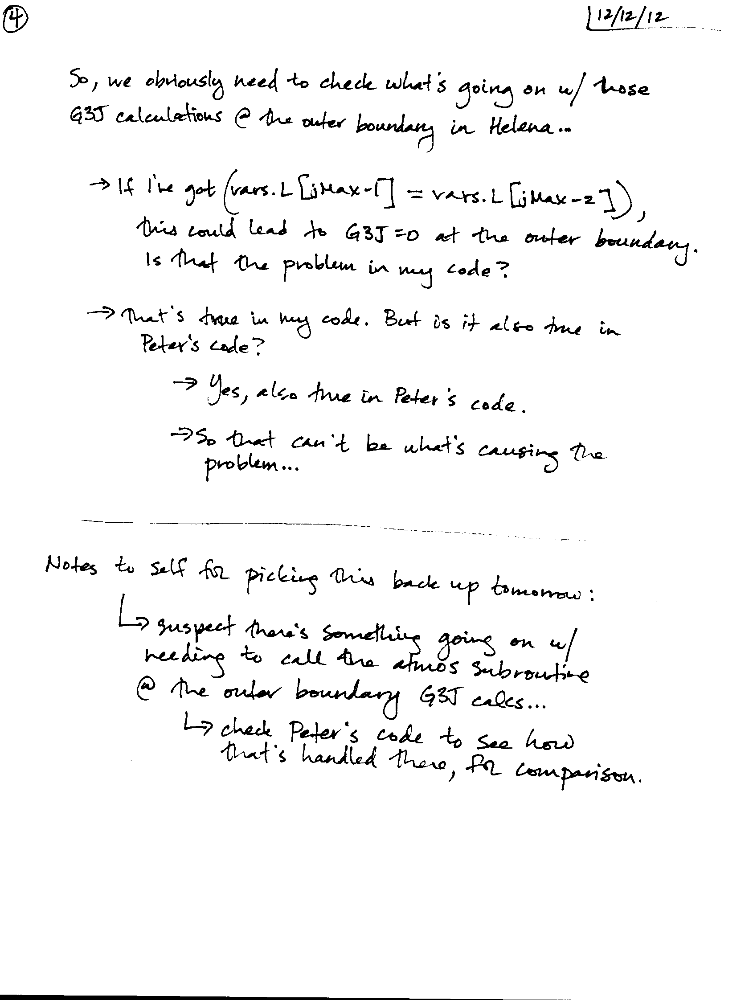

Figure
1:
Comparison of the dX profiles generated by Peter and Helena when dTime = 3.5e9 seconds, rather than zero. Everything else about the simulations is identical to the ones plotted in Figure 1.
Date & Time: Dec. 12, 2012
Location: Campus
Computing context: /Desktop/Research/CppHenyeyCode, /Desktop/Research/BodenheimerCode/UnalteredCode/
From last time:
Updated checklist:
Turn dTime on (set > 0) and compare the results from the two codes
Note on this: there's a whole set of terms that will come into play in the G3J calcs. and associated CDEs once you let dTime > 0
Debug as necessary
Run Peter's code on the 10Mj no-fusion model with L/H = 0, dTime > 0, and make sure it converges (for at least on time step)
If not, debug as necessary
Check that Helena also converges the 10Mj no fusion model for dTime > 0, on a single timestep
Re-enable dX correction application in the Helena code
This means you'll have to re-enable the dX rescaling part of the while-loop code.
Compare the converged models
If they don't agree decently, debug as necessary
Step 1a/b:
Peter's code ends up using
DTIME: 3.4789D+09
when I let it do that "just-use-the-same-dTime-value-that-the-read-in-model-had" thing to determine what dTime value to use.
Set dTime to the same value in AboutThisRun.h for Helena.
Figure 2 = dX profiles from running both codes with this timestep on the 10Mjup, L/H=0 model.
Comparison of the dX
profiles generated by Peter and Helena when dTime = 3.5e9 seconds,
rather than zero. Everything else about the simulations is identical
to the ones plotted in Figure 1.
Figure
1:
Today's work:
Figure out why the dX profiles agree when dTime = 0, but not when dTime > 0.
Ways of doing this:
See which discrepancies arise when I run both codes with dTime \approx 1e7 seconds (rather than 1e9 seconds)
See how the discrepancies grow with/depend on dTime.
Result: See Figure 2 below.
A comparison of how the
dX profiles from the 2 codes (fail to) agree based on the dTime
value used in the simulation. dTime values decrease from left to
right (1e7 , 1e3, and 1 seconds, respectively).
The dL profiles are the
only ones that really change much (at all?) with dTime. Notice the
dP, dr, and dT plots all have the same scaling, while the dL ones
change by 7 orders of magnitude over the 3 cases. Note: that's the
same number of orders of magnitude that dTime covers in these
simulations, too. Coincidence? Not entirely!
Figure
2:
Compare how Helena and Peter's code are handling the P_old and T_old values (I suspect this is the main thing that's causing the differences)
Result: I added a set vars.old = vars.now in Helena for that initial time-step pass, and it didn't improve or change the resulting dX profiles at all.
Also looked into how Peter's code handles the CDE calculations for non-zero dTime values, and am still not entirely clear on how his approach (analytic calcs of the derivatives) should carry over to Helena's (numerical calculation of the derivs).
Check that Helena is handling the 1/dTime calculation stuff correctly in the G3J subroutine.
Result: it looks like that's working fine. Also, the dL amplitude increases w/ decreasing dTime provide evidence in favor of that working right. (I think.)
Based on the 3 results above, I think the issue lies in calculating the CDE derivs involving G3J with respect to P and T.
Switched over to pen & paper at this point. See scans of the notes below.
